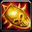
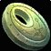
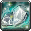

Le Mage est exclusivement une classe de lanceur de sorts. Il possède un burst puissant en monocible tout comme en multicible. Il fait des dégâts avec des sorts de type Arcanes, Feu et Givre.
C'est une classe assez fragile, mais qui possède de nombreux atouts pour prendre le dessus sur ses adversaires. La particularité de la spécialité Feu réside dans son gros dps direct et sur la durée.
En PvP c'est une spécialisation moyennement dur à jouer, car cette classe n'a pas trop de survie, mais par contre a un dps monstrueux.
Elle est très utile en bg, plus ou moins opti pour de la 2c2 en arène et très adapté pour de la 3c3 ou 5c5 de part ses controles qu'elle peut offrir.
 LES SORTS LES PLUS UTILISÉS
LES SORTS LES PLUS UTILISÉS
De dégâts
 Projectiles des arcanes
Projectiles des arcanes Explosion pyrotechnique
Explosion pyrotechnique Explosion des arcanes
Explosion des arcanes Choc de flammes
Choc de flammes Tir (utilise votre baguette)
Tir (utilise votre baguette)De soutiens
 Amplification de la magie
Amplification de la magie Bouclier de mana (le meilleur ami)
Bouclier de mana (le meilleur ami) Contresort (Contre les casters)
Contresort (Contre les casters) Evocation (Pour regen en vitesse)
Evocation (Pour regen en vitesse) Intelligence des arcanes
Intelligence des arcanes Présence spirituelle (Suivant votre spé, Prochain sort à incantation devient un sort instantanné)
Présence spirituelle (Suivant votre spé, Prochain sort à incantation devient un sort instantanné) Rituel des rafraichissements (L'apéro)
Rituel des rafraichissements (L'apéro) Transfert (Très utile, surtout pendant qu'on est étourdi)
Transfert (Très utile, surtout pendant qu'on est étourdi) Les caps et stats
Les caps et statsRappel : Un cap par définition c'est la valeur à partir de laquelle vous n'avez plus aucun intérêt à monter une statistique.
Expliquées par ordre de priorité :
Le critique des sorts
C'est LA stat la plus importante à monter en PvP pour un mage feu.
Le crit sort du chaman est calculé sur la base de 80 intel = 22,375 score de crit = 1% crit
Mieux vaux prioriser cette stat, que du dégâts des sorts ou de l'intelligence. En PvP il vous faut au moins atteindre les 17% de coup critiques de base. La vous ferez déjà de bon critiques, mais ce n'est pas suffisant, car le cap monte à 23% (Sans compter les talents)
Vous pouvez toutefois monter légèrement au dessus du cap, à 26%, car la résilience diminue les chances de recevoir un coup critique.
Le dégât des sorts
C'est une stat importante, mais moins rentable que le critique des sorts à part pour la spé feu-givre. Cette stat n'a pas vraiment de cap, mais vous allez la monter uniquement avec le stuff, les enchantements et un peu avec les gemmes. Vous pouvez aussi ajouter un bijoux dégâts des sorts en plus de votre  trinket PvP comme le bijoux Icône du croissant d'argent ou  Don de Xi'ri (qui vous donne aussi du critiques)
Avec 600 de dégâts des sorts au début vous commencerais à être bien.
La pénétration des sorts
Cette stat ci comparé au toucher des sorts, évite les résistes adverse. C'est à dire que plus vous avez du score de pénétration, moins l'ennemi va "résister" à vos sorts.
Peu de joueurs ont une grosse résistance au feu, inutile donc de trop monter cette stat, sachant que les bagues PvP vous donnent 14 de pénétration des sorts chacune. Il y a l'enchant sur cape de 20 pénétration aussi, ce qui vous fait un total de 48 au score de pénétration des sorts.
Autant dire que cela suffit, car il n'y a pas de "cap" à proprement dit. Mais toutefois si vous avez des "résistes" vous pouvez mettre une gemme ou deux de pénétration des sorts (accouplé à du critique des sorts) vue qu'il vous faudra deux gemme bleue pour activer votre méta (voir plus bas)
Le toucher des sorts
Tout d'abord il faut comprendre que le toucher des sorts vous permet d'éviter "les ratés" quand vous lancer un sort (à ne pas confondre avec la pénétration des sorts).
En PvP contre une cible de même niveau vous devrez "théoriquement" avoir 4% de toucher des sorts. Mais le cap est néanmoins de 3%, car il y a 1% "incompressible", c'est à dire pas nullifiable via spellhit/talent/buff/etc... La masse / dague s2 pour la spé feu-givre vous donne 1,19% de toucher des sorts, donc il vous manque 1,81% ce qui n'est pas énorme. alors que pour les autres spé feu, le baton s2 donne 1,90% de toucher, il vous manquera 1,10% de toucher. Donc le score de toucher n'est qu'une stat optionnelle, et il ne vous est pas obligé de devoir la up en PvP du moins.
Si vous estimez toute fois que vous faites beaucoup de "raté", essayez d'augmenter votre toucher légérement. Mais je rappel encore qu'en PvP il est inutile de monter cette stat, car cette stat est juste en relation avec la différence de niveau de l'ennemi. Or la vous avez le même niveau que l'ennemi forcement. (Alors qu'en PvE les boss sont de niveau 73, donc ils ont plus de score de toucher)
La résilience
Cette stat est importante en PvP. Elle diminue les dégâts des sources de dégâts périodiques (DOT) et les chances de recevoir un coup critique. Diminue aussi les effets des drains de mana et les dégâts des coups critiques.
Pour faire simple le cap de la résilience est de 492.5, au dessus de 500, la résilience ne diminue plus les chances de recevoir un coup critique (diminué de 25% au max). Mais il n'y a pas de cap résilience pour la diminution des dégâts des DOT.
L'endurance
C'est la Stat de la survivabilité, assez importante en PvP. à monter en second plan à la fois avec le stuff mais aussi avec quelques enchant / gemmes.
Vous pouvez mettre deux gemmes dégâts des sorts - endu (gemme rouge / bleue) si votre pénétration des sorts vous convient, pour activer votre méta (voir plus bas).
Le score de hate des sorts
C'est ce qui vous réduit le temps d'incantation des sorts
Cette stat est utile au bout de 200 au score de hate, en dessous, cette stat est inutile. Si vous avez un stuff full PvP, atteindre ce score est carrément impossible, même en étant full gemmé et enchant hate. (vous atteindrez environ 140 au score de hate des sorts)
Il vous faut pour le coup du stuff PvE obligatoirement pour arriver à avoir ce score de hate. Le cap de cette stat est à 390.
Après cette stat reste un choix, mais vous allez sacrifier votre score de coup critique et donc faire moins de critique, à part si vous êtes full stuff PvE, mais la c'est la résilience que vous allez sacrifier, et vous allez prendre chère.
La hate c'est bien, mais ça bouffe la mana à une vitesse affolante, donc gardez bien à l'esprit qu'il faut bien équilibrer cette stat avec d'autres, en particulier le score de crit.
L'intelligence
Une stat de base utile, qui vous donnera un peu de coup critique. En PvP c'est la stat que vous montez avec votre stuff. Donc inutile d'en dire plus.
La regen mana/5sec
Stat peu importante, vue qu'en PvP les combats sont fait pour ne pas durer, surtout avec un mage. Si vous êtes sans mana, il vous suffit de regen. Si vous êtes en combat et sans mana, il y a l'émeraude ou le rubis de mana, ou encore Evocation pour palier à ce problème.
Donc la MP5 n'est pas une stat à up en PvP
 L'arbre de talent
L'arbre de talentAvant de commencer vous pouvez voir les talents mage sur ce site
Les points importants dans la spé Feu sont :
 Enflammer
Enflammer Jet de flammes Explosion pyrotechnique
Jet de flammes Explosion pyrotechniqueSpé deep feu
 Incinération
Incinération Puissance du feu
Puissance du feu Focalisation des arcanes Bouclier de mana amélioré contresort amélioré
Focalisation des arcanes Bouclier de mana amélioré contresort amélioréSpé feu - arcane
Incinération Focalisation des arcanes Bouclier de mana amélioré contresort amélioré Présence spirituelle Esprit des arcanes (suivant votre spé)
Esprit des arcanes (suivant votre spé)Spé feu - givre
Vous pouvez cliquer sur les images pour les agrandir.
Feu Souffle du dragon

Arcanes - Feu Lenteur + Pom pyro

Arcanes - Feu Pom pyro + Vague explosive

Arcanes - Feu Pom pyro + Vague explosive + Vitesse flamboyante

Arcanes - Feu Pom pyro + Vague explosive + Vitesse flamboyante + combustion

Feu - givre

Variante

 Les gemmes
Les gemmesPour ce qui est des enchants et gemmes en gros il vous faut faire mix entre Critiques des sorts et dégâts des sorts ! Après j'ai une préfèrence pour la deuxième méta.
 Méta-gemme Diamant Brulétoile de rapidité : +12 dégâts sorts, augmentation de la vitesse de course (Meta gemme à avoir avec les éclats d'esprit à Auchindoun)
Il vous faut 2 gemmes jaunes et 1 gemme rouge pour pouvoir l'activer
 +4 critique des sorts +5 dégâts des sorts, ou
+4 critique des sorts +5 dégâts des sorts, ou  +5 critique des sorts +6 dégâts des sorts
+5 critique des sorts +6 dégâts des sorts +9 dégâts des sorts, ou
+9 dégâts des sorts, ou  +12 dégâts des sorts
+12 dégâts des sorts Méta-gemme Diamant Bruleciel chaotique : +12 score crit des sorts et +3% aux degats des sorts critiques
Il vous faut 2 gemmes Bleues pour l'activer
Si vous voulez monter votre pénétration des sorts optez pour cette compo :
+4 critique des sorts +5 dégâts des sorts, ou +5 critique des sorts +6 dégâts des sorts +9 dégâts des sorts, ou +12 dégâts des sortsSi vous avez assez de pénétration des sorts, passez à une compo qui monte l'endurance :
+4 critique des sorts +5 dégâts des sorts, ou +5 critique des sorts +6 dégâts des sorts +9 dégâts des sorts, ou +12 dégâts des sorts +5 dégâts des sorts +6 Endurance, ou
+5 dégâts des sorts +6 Endurance, ou  +6 dégâts des sorts +7 Endurance x2
+6 dégâts des sorts +7 Endurance x2 Les enchantements
Les enchantementsPar ordre de priorité
Casque
Glyphe de puissance (+22 dégâts des sorts, +14 toucher des sorts) Réputation Sha'Tar Révéré.
Arcanum du gladiateur (+18 Endurance et +20 au score de résilience) Réputation Opération Soleil brisé Amical.
Epaules
Calligraphie superieures de discipline (+18 dégâts des sorts, +10 score de critique des sorts) Exalté Aldor
Calligraphie supérieure de l'orbe (+12 dégâts des sorts, +15 score de critique des sorts) Exalté Clairvoyant
Calligraphie de discipline (+15 dégâts des sorts) Honoré Aldor
Calligraphie de l'orbe (+13 score de critique des sorts) Honoré Clairvoyant
Torse
Pts vie exceptionnels (+150 point de vie)
Résilience majeur (+15 Résilience)
Carac. exceptionnelles (+6 à toutes les caractèristiques)
Brassards
Puissance des sorts (+15 dégâts des sorts)
Robustesse (+12 Endurance)
ou à la limite Intelligence majeure (+ 12 Intelligence)
Cape
Pénétration des sorts (+20 Pénétration des sorts)
Armure majeure (+120 Armure)
ou à la limite Résistance majeure (+7 à toutes les résistances)
Jambes
Craft par un Couturier
Fil ensorcelé runique (+35 dégâts des sorts, +20 Endurance)
Fil ensorcelé mystique (+25 dégâts des sorts, +15 Endurance)
Gants
Puissance des sorts majeure (+20 dégâts des sorts)
Frappe-sort (+15 toucher des sorts)
Pieds
Vitesse du sanglier (+9 Endurance et augmentation de la vitesse de course)
Robustesse (+12 Endurance)
Tout dépend de votre méta gemme puisque l'augmentation de la vitesse ne se cumule pas.
Bagues
Si vous avez enchantement
Puissances des sorts (+12 dégâts des sorts)
Arme
Puissance de sorts majeure (+40 dégâts des sorts), le must absolu pour caster dps
Légende :
[Button:1] = bouton gauche de la souris
[button:2] = bouton droit de la souris
[nomod] = bouton par défaut du clavier
[mod:alt] = alt + le bouton par défaut
[mod:shift] = shift + le bouton par défaut
[mod:ctrl] = controle + le bouton par défaut
Ces macros sont adapté pour quelqu'un qui joue à la souris, mais vous pouvez les adapter à votre sauce par exemple :
Avec Blizzard, version à la souris
Bouton gauche Blizzard rang max, bouton droit Blizzard rang 1.
Version bind clavier :
[Touche par défaut] Blizzard rang max, Alt+[touche par défaut] Blizzard rang 1.
Pour un raccourci clavier il faut indiquer [nomod] pour la touche par défaut, et vous pouvez remplacer alt pour autre chose sur la deuxième ligne.
Notez aussi que si vous ne mettez aucun rang de sort, le rang maximum sera utilisé.
Cône de froid
Bouton gauche Cône de froid rang max, bouton de droite Cône de froid rang 1.
Explosion des arcanes
Bouton gauche Explosion des arcanes rang max, bouton de droite Explosion des arcanes rang 1.
Nova de givre et Contresort
Bouton gauche Nova de givre rang max, bouton de droite Contresort rang max. Ce qui vous permet d'utiliser rapidement les deux sorts en même temps, car il n'ont pas le même GCD.
Eclair de givre
Bouton gauche utilise votre bijoux et incant Eclair de givre rang max, bouton de droite Eclair de givre rang 1.
Bloc de glace
Bouton gauche Bloc de glace, bouton de droite enleve le bloque de glace instantanément, très utile pour enlever un silence ou un controle et dps ou controler la cible rapidement.
Métamorphose
Lance Métamorphose et indique le nom de la personne que vous Métamorphosez.
Présence spirituelle
Bouton gauche Explosion pyrotechnique instantané, bouton de droite Eclair de givre instantané.
Utilisation des trinkets pour burst
Utilise votre sort Pouvoir des arcanes, votre Bijoux et le sort Veines glaciales.
Macro anti-rogue/feral
Vous pouvez la spammer dès que vous voyez un fufu en camouflage, la macro va vous permettre de cibler le premier ennemi et de lui appliquer un Javelot de glace Rang 1.


 Haut de page
Haut de page